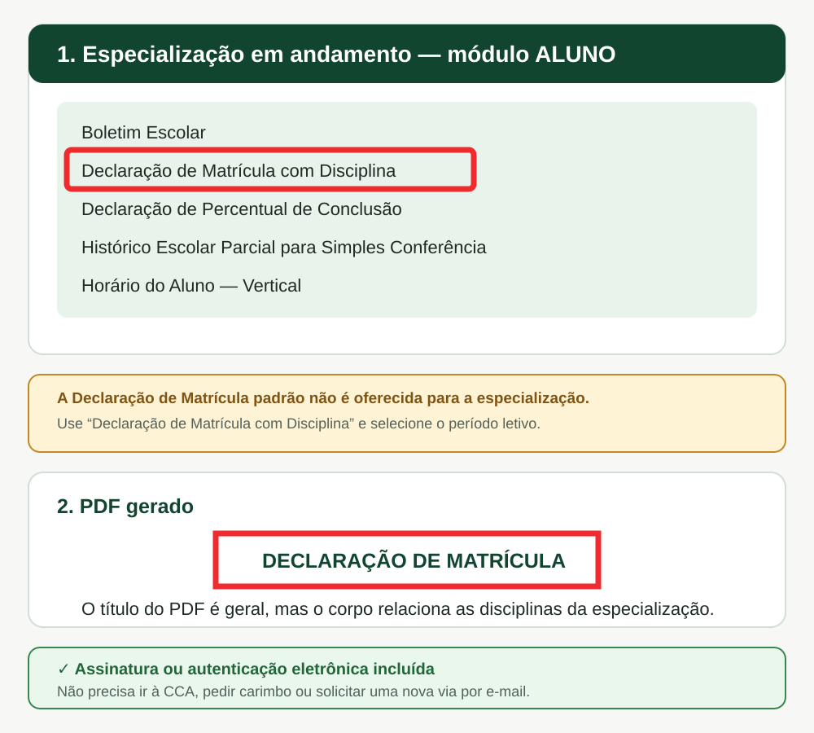
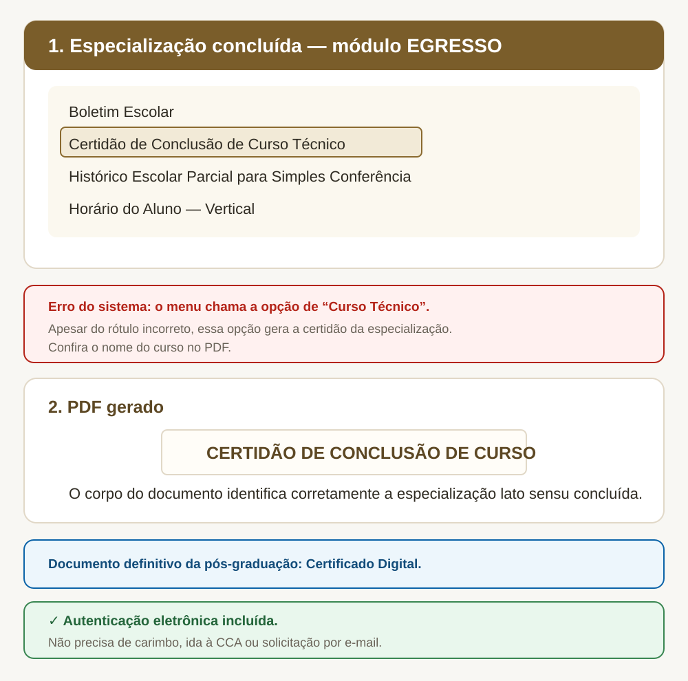

Passo a passo
Especialização em andamento
- Escolha o módulo ALUNO.
- Entre com matrícula e senha.
- Abra Solicitar Documentos e clique em Nova Solicitação.
- Escolha o documento e, quando solicitado, o período letivo.
- Clique em Solicitar Documento e baixe o PDF.
Especialização concluída
- Escolha o módulo EGRESSO.
- Entre com matrícula e senha.
- Abra Solicitar Documentos e clique em Nova Solicitação.
- Selecione a Certidão, o Histórico Parcial, o Boletim ou o Horário.
- Clique em Solicitar Documento e baixe o PDF.
Emissão autônoma
Sem carimbo, sem fila e sem e-mail. Os documentos emitidos diretamente pelo Q-Acadêmico já possuem assinatura ou autenticação eletrônica, com chave ou link para conferência. Não é necessário ir à CCA, pedir carimbo ou assinatura, nem solicitar outra via por e-mail.
Ainda estou cursando a especialização
Entre pelo módulo ALUNO. O sistema disponibiliza:
- Boletim Escolar;
- Declaração de Matrícula com Disciplina;
- Declaração de Percentual de Conclusão;
- Histórico Escolar Parcial para Simples Conferência;
- Horário do Aluno — Vertical.
A declaração padrão não aparece. Para especialização lato sensu, o sistema disponibiliza apenas “Declaração de Matrícula com Disciplina”. O PDF gerado pode trazer no título apenas “Declaração de Matrícula”, mas relaciona as disciplinas cursadas.

Já concluí a especialização
Entre pelo módulo EGRESSO. O sistema disponibiliza:
- Boletim Escolar;
- Certidão de Conclusão;
- Histórico Escolar Parcial para Simples Conferência;
- Horário do Aluno — Vertical.
Erro de nomenclatura na tela oficial. Para o egresso da especialização, a lista mostra “Certidão de Conclusão de Curso Técnico”. Apesar do nome incorreto, essa é a opção que gera a Certidão de Conclusão da especialização. Confira no PDF se o nome do curso está correto.

Enquanto o Certificado Digital não fica pronto
Na especialização lato sensu, o documento definitivo é o Certificado Digital, não o diploma. Enquanto ele está em processamento, a Certidão de Conclusão e o Histórico Escolar Parcial podem ser usados para necessidades imediatas, conforme as exigências da instituição que receberá os documentos.